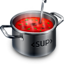
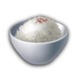
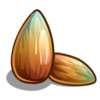
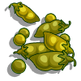
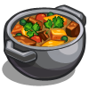

Kasviksia inkiväärikastikkeessa (G, VS)
 Tomaattista papukeittoa (A, G, VS)
 Tomaattiriisiä (G)
Tomaattista papukeittoa (A, G, VS)
Yrttimarinoitua luomutofua (A, G, VS)
Höyrytettyä kukkakaalia ja porkkanaa (G)
Tomaattista papukeittoa (A, G, VS)
 Paahdettuja auringonkukansiemeniä (G)
 Punaisia linssejä ja persiljaa (G)
Porkkanaraastetta (G)
Paahdettuja kurpitsansiemeniä (A, G)
Makeaa sipuli-chilikastiketta (G, VS)
 Kikherne-bataattipataa (A, G, VS)
Höyrytettyä kukkakaalia ja porkkanaa (G)
Persiljaperunoita (G)
Intialaista sieni-kookoscurrya (G, VS)
Tomaattista kikhernekeittoa (G, VS)
Uunitomaatti (G)
Paahdettuja perunoita (G)
Chilimaustettua tomaatti-sipulikastiketta (G)
Kasvis-hernekeittoa (A, G)
Linssipihvejä (A, G)
Kookoskasviksia (A, G)
Tomaattista papukeittoa (A, G, VS)
Tomaattista kikhernekeittoa (G, VS)
Paahdettuja kasviksia (G)
Tomaattiriisiä (G)
Kasviksia inkiväärikastikkeessa (G, VS)
Tomaattista papukeittoa (A, G, VS)
Linssipihvejä (A, G)
Tomaattista papukeittoa (A, G, VS)
Paahdettuja kasviksia (G)
(A) Contains allergens | (G) Gluten free Last updated Sun 31 Jan 2016 01:03
 Höyrytettyä kukkakaalia ja porkkanaa (G)
Höyrytettyä kukkakaalia ja porkkanaa (G) Persiljaperunoita (G)
Persiljaperunoita (G) Uunitomaatti (G)
Uunitomaatti (G)